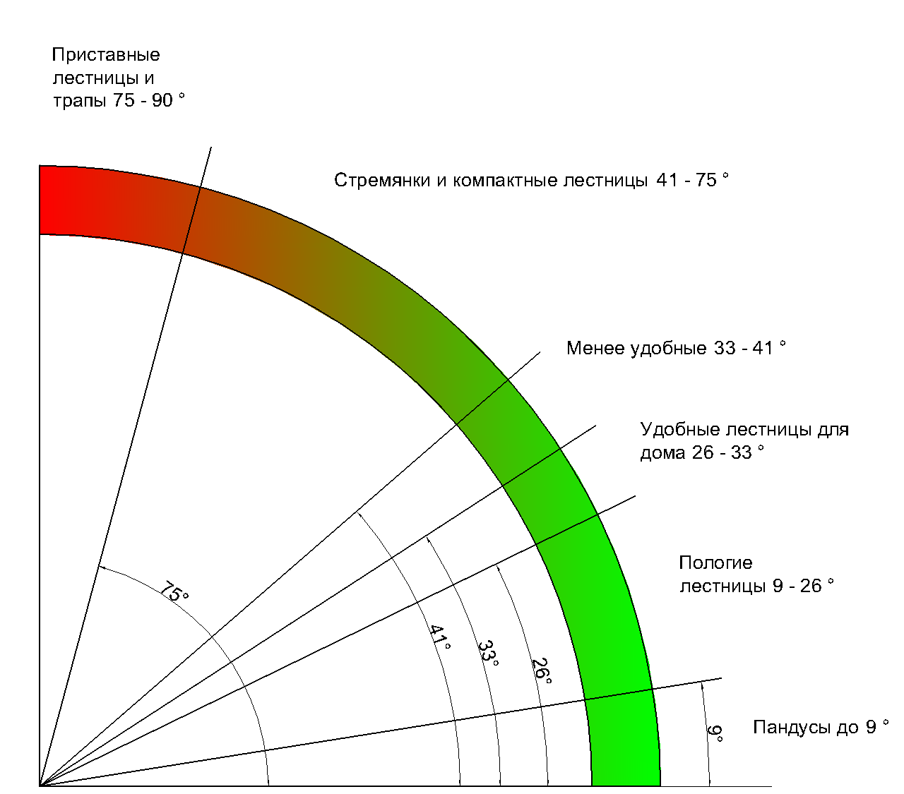

096-774-15-92
096-774-15-92Требования к лестницам
Почему одни лестницы удобны для подъёма и спуска а другие не очень? На какие основные требования к лестницам нужно обратить внимание, чтобы лестница была безопасной, и какая площадь проема нужна под комфортную лестницу.
Если вы не собираетесь тренироваться альпинизму, подымаясь на второй этаж вашей квартиры или дома, вам необходимо предусмотреть достаточной ширины и длины проем для лестницы, уже на стадии проектирования дома. К сожалению, застройщики зачастую встраивают лестницы по принципу «сколько места останется между ванной и кухней».
В итоге угол подъема получается слишком крутой, либо ширина прохода слишком узка и высота подъема неудобна для подъема, а особенно спуска. Вы не замечали ничего подобного у себя в подвальной лестнице, или у знакомых на даче? Если раньше это считалось чуть ли не «нормой» для загородного и дачного строительства, то с тех пор требования и стандарты строения лестниц поднялись на новый уровень. И одним из решений есть модульная лестница.
Так почему же одни лестницы удобные а другие нет
Есть четыре основных требования к лестницам влияющие на комфортность:
Высота ступени
Ширина ступени
Ширина лестницы
Высота прохода лестницы
Рассмотрим подробнее основные требования к лестницам:
Высота ступени лестницы
высота и ширина ступенейКакая оптимальная высота ступени лестницы? Исследования показывают, что комфортная высота подъема равна, приблизительно четверти шага человека. Шаг взрослого человека примерно составляет 60-80 см. Значит оптимальная высота ступени лестницы 15 -20 см.
Если высота будет меньше 15 см, то будет появляться инстинктивное желание шагнуть через ступеньку. Если высота ступени больше 20 см., то будет тяжело поднимать ногу, и чем больше, тем труднее.
Ширина ступени лестницы
Средний размер стопы взрослого человека составляет 26 – 30 см. Для того чтобы чувствовать себя комфортно при спуске или подъеме по лестнице не менее 90% площади стопы должно опираться на ступень. Потому оптимальная ширина ступени должна быть от 23 до 27 см., а с учетом заступа (нахлеста одной ступени на другую, примерно 3 см.) 26 – 30 см. Такая ширина ступени лестницы примерно составляет половину шага человека и является максимально комфортной.
Высота и ширина ступеней лестницы определяет угол наклона лестницы, и учитывая приведенные выше размеры высоты и ширины ступеней можно рассчитать оптимальный угол наклона, который составит от 26 до 35 град. Все что выше этого наклона будет восприниматься как крутая лестница, а ниже слишком пологая. Градации лестниц приведены на рисунке .
угол наклона лестницы

Ширина лестницы
Опыт показывает, что оптимальной шириной лестницы может быть 90-100 см. . Такое расстояние позволит на марше разойтись двум людям, пронести диван, другие крупногабаритные вещи, или по корзине с цветами в каждой руке. : )
Высота прохода лестницы
высота прохода лестницыЕсть еще один фактор, который нельзя забывать при проектировании лестниц, не менее важный, чем выше приведенные три. Это высота прохода. В том месте, где человек входит в проем, — высота от ступени до перекрытия должна на 10 см. (психологический минимум), а лучше 20 см. больше чем рост человека. То есть не менее двух метров.
Это основные, но далеко не все характеристики удобной и комфортной лестницы. Есть требования, связанные с креплением лестницы к стенам и полу, есть эстетические аспекты и конструктивные, связанные с планировкой квартиры и планами обшивки лестницы. Все в одной статье проговорить сложно да, и нет в этом необходимости. Многое решается на месте, при общении с нашими специалистами, которые знают и обратят ваше внимание на все нюансы при выезде на замер, а так же предложат варианты решения.
Информация взятая с сайта http://stupeni.kiev.ua/trebovaniya-k-lestnitsam/
Заказать или узнать больше информации звоните тел 093-314-14-20 Ярослав С удовольствием отвечу на ваши вопросы